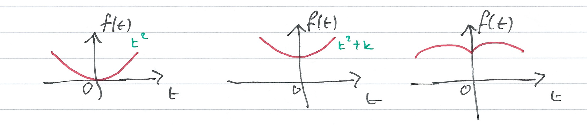
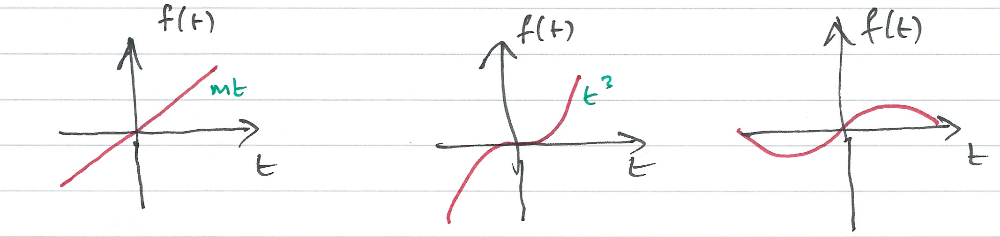
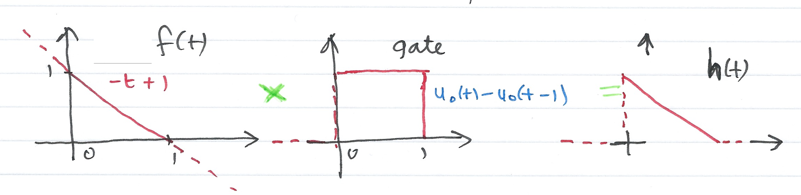

The Impulse Response and Convolution
Contents
The Impulse Response and Convolution#
Colophon#
An annotatable worksheet for this presentation is available as Worksheet 8.
The source code for this page is laplace_transform/5/convolution.ipynb.
You can view the notes for this presentation as a webpage (HTML).
This page is downloadable as a PDF file.
Scope and Background Reading#
This section is an introduction to the impulse response of a system and time convolution. Together, these can be used to determine a Linear Time Invariant (LTI) system’s time response to any signal.
As we shall see, in the determination of a system’s response to a signal input, time convolution involves integration by parts and is a tricky operation. But time convolution becomes multiplication in the Laplace Transform domain, and is much easier to apply.
The material in this presentation and notes is based on Chapter 6 of Karris[Karris, 2012].
Agenda#
The material to be presented is:
Even and Odd Functions of Time
Time Convolution
Graphical Evaluation of the Convolution Integral
System Response by Laplace
Even and Odd Functions of Time#
(This should be revision!)
We need to be reminded of even and odd functions so that we can develop the idea of time convolution which is a means of determining the time response of any system for which we know its impulse response to any signal.
The development requires us to find out if the Dirac delta function (\(\delta(t)\)) is an even or an odd function of time.
Even Functions of Time#
A function \(f(t)\) is said to be an even function of time if the following relation holds
that is, if we relace \(t\) with \(-t\) the function \(f(t)\) does not change.
Polynomials with even exponents only, and with or without constants, are even functions.
For example:
is even.
Other Examples of Even Functions#
Odd Functions of Time#
A function \(f(t)\) is said to be an odd function of time if the following relation holds
that is, if we relace \(t\) with \(-t\), we obtain the negative of the function \(f(t)\).
Polynomials with odd exponents only, and no constants, are odd functions.
For example:
is odd.
Other Examples of Odd Functions#
Observations#
For odd functions \(f(0) = 0\).
If \(f(0) = 0\) we should not conclude that \(f(t)\) is an odd function. c.f. \(f(t) = t^2\) is even, not odd.
The product of two even or two odd functions is an even function.
The product of an even and an odd function, is an odd function.
In the following \(f_e(t)\) will denote an even function and \(f_o(t)\) an odd function.
Time integrals of even and odd functions#
For an even function \(f_e(t)\)
For an odd function \(f_o(t)\)
Even/Odd Representation of an Arbitrary Function#
A function \(f(t)\) that is neither even nor odd can be represented as an even function by use of:
or as an odd function by use of:
Adding these together, an abitrary signal can be represented as
That is, any function of time can be expressed as the sum of an even and an odd function.
Example 1#
Is the Dirac delta \(\delta(t)\) an even or an odd function of time?
We’ll decide in class.
Solution to example 1#
Let \(f(t)\) be an arbitrary function of time that is continous at \(t=t_0\). Then by the sifting property of the delta function
and for \(t_0 = 0\)
Also for an even function \(f_e(t)\)
and for an odd function \(f_o(t)\)
Even or odd?#
An odd function \(f_o(t)\) evaluated at \(t=0\) is zero, that is \(f_o(0) = 0\).
Hence
Hence the product \(f_o(t)\delta(t)\) is odd function of \(t\).
Since \(f_o(t)\) is odd, \(\delta(t)\) must be even because only an even function multiplied by an odd function can result in an odd function.
(Even times even or odd times odd produces an even function. See earlier slide)
Time Convolution#
Consider a system whose input is the Dirac delta (\(\delta(t)\)), and its output is the impulse response \(h(t)\).
We can represent the input-output relationship as a block diagram
In general#

Add an arbitrary input#
Let \(u(t)\) be any input whose value at \(t=\tau\) is \(u(\tau)\), Then because of the sampling property of the delta function

(output is \(u(\tau)h(t-\tau)\))
Integrate both sides#
Integrating both sides over all values of \(\tau\) (\(-\infty < \tau < \infty\)) and making use of the fact that the delta function is even, i.e.
we have:

Use the sifting property of delta#
The second integral on the left side reduces to \(u(t)\)

The Convolution Integral#
The integral
or
is known as the convolution integral; it states that if we know the impulse response of a system, we can compute its time response to any input by using either of the integrals.
The convolution integral is usually written \(u(t)*h(t)\) or \(h(t)*u(t)\) where the asterisk (\(*\)) denotes convolution.
Graphical Evaluation of the Convolution Integral#
The convolution integral is most conveniently evaluated by a graphical evaluation. The text book gives three examples (6.4-6.6) which we will demonstrate in class using a graphical visualization tool developed by Teja Muppirala of the Mathworks.
The tool: convolutiondemo.m (see license.txt).
clear all
cd ../matlab/convolution_demo
pwd
convolutiondemo % ignore warnings
Convolution by Graphical Method - Summary of Steps#
For simplicity, we give the rules for \(u(t)\), but the procedure is the same if we reflect and slide \(h(t)\)
Substitute \(u(t)\) with \(u(\tau)\) – this is a simple change of variable. It doesn’t change the definition of \(u(t)\).
Reflect \(u(\tau)\) about the vertical axis to form \(u(-\tau)\)
Slide \(u(-\tau)\) to the right a distance \(t\) to obtain \(u(t-\tau)\)
Multiply the two signals to obtain the product \(u(t-\tau)h(\tau)\)
Integrate the product over all \(\tau\) from \(-\infty\) to \(\infty\).
Examples#
We will do these live in class.
Example 2#
(This is example 6.4 in the textbook)
The signals \(h(t)\) and \(u(t)\) are shown below. Compute \(h(t)*u(t)\) using the graphical technique.

h(t)#
The signal \(h(t)\) is the straight line \(f(t)=-t+1\) but this is defined only between \(t = 0\) and \(t = 1\). We thus need to gate the function by multiplying it by \(u_0(t)-u_0(t-1)\) as illustrated below:
convolutiondemo settings#
Let
f = heaviside(t)-heaviside(t-1) % u(t)Let
g = (t-1)*(heaviside(t)-heaviside(t-1)) % h(t)Set range \(-2 < \tau < -2\)
Alternative solution#
The original version of convolutiondemo didn’t support the heaviside function so to prepare this problem for evaluation in the convolutiondemo tool, we needed to determine the Laplace Transforms of \(h(t)\) and \(u(t)\).
Thus
u(t)#
The input \(u(t)\) is the gating function:
so
convolutiondemo settings#
Let
f = (1 - exp(-s))/s % U(s)Let
g= (s + exp(-s) - 1)/s^2 % H(s)Set range \(-2 < \tau < -2\)
Summary of result#
For \(t < 0\): $\(u(t-\tau)h(\tau) = 0\)$
For \(t = 0\): \(u(t-\tau) = u(-\tau)\) and \(u(-\tau)h(\tau) = 0\)
For \(0 < t \le 1\): $\(h*u = \int_0^t (1)(-\tau + 1)d\tau = \left.\tau - \tau^2/2\right|_0^t = t-t^2/2\)$
For \(1 < t \le 2\): $\(h*u = \int_{t-1}^1(-\tau + 1)d\tau = \left.\tau - \tau^2/2\right|_{t-1}^{1} = t^2/2-2t+2\)$
For \(2 \le t\): $\(u(t-\tau)h(\tau) = 0\)$
Example 3#
This is example 6.5 from the text book.
Answer 3#
Check with MATLAB#
syms t tau
x1=int(exp(-tau),tau,0,t)
x2=int(exp(-tau),tau,t-1,t)
Example 4#
This is example 6.6 from the text book.
Answer 4#
System Response by Laplace#
In the discussion of Laplace, we stated that
We can use this property to make the solution of convolution problems even simpler.
Impulse Response and Transfer Functions#
Returning to the example we started with
Then the impulse response of the system \(h(t)\) will be given by:
Where \(H(s)\) be the laplace transform of the impulse response of the system \(h(t)\). From properties of the Laplace transform we know that
so that \(\Delta(s) = 1\) and
A consequence of this is that the transform of the impulse response \(h(t)\) of a system with transfer function \(H(s)\) is completely defined by the transfer function itself.
Previously we argued that the response of system with impulse response \(h(t)\) was given by the convolution integrals:
Thus the Laplace transform of any system subject to an input \(u(t)\) is simply
and
Using tables, solution of a convolution problem by Laplace is usually simpler than using convolution directly.
More Examples#
We will work through these in class
Example 5#
This is example 6.7 from the textbook.
For the circuit shown above, show that the transfer function of the circuit is:
Hence determine the impulse respone \(h(t)\) of the circuit and the response of the capacitor voltage when the input is the unit step function \(u_0(t)\) and \(v_c(0^-)=0\).
Assume \(C=1\; \mathrm{F}\) and \(R=1\;\Omega\).
Solution 5a - Impulse response#
which when \(C=1\; \mathrm{F}\) and \(R=1\;\Omega\) reduces to
By PFE
The residues are \(r_1=-1\), \(r_2=1\), so
Homework#
Verify this result using the convolution integral
Reference#
See Bibliography.